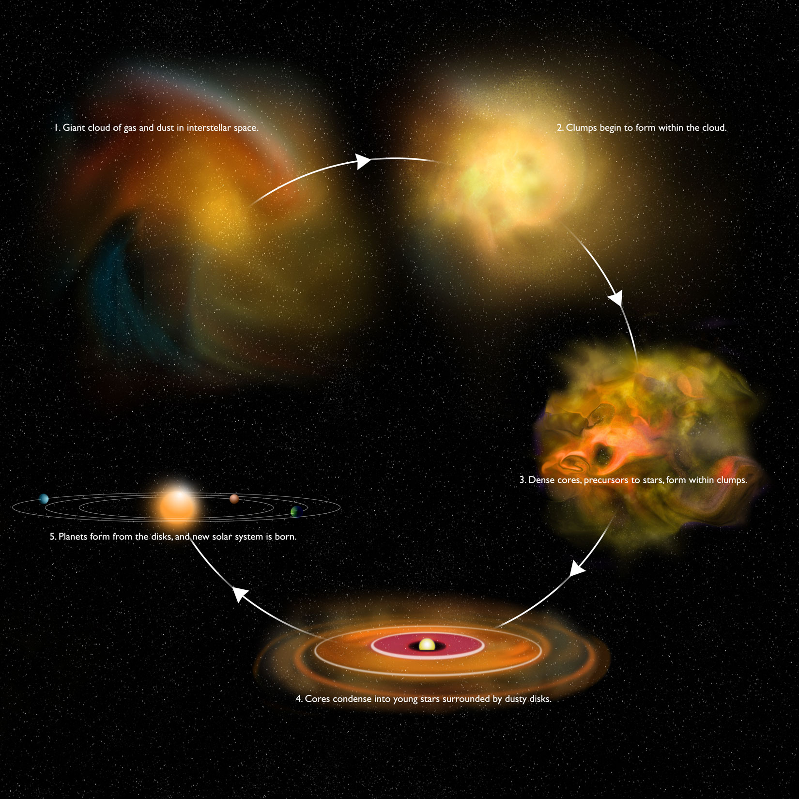
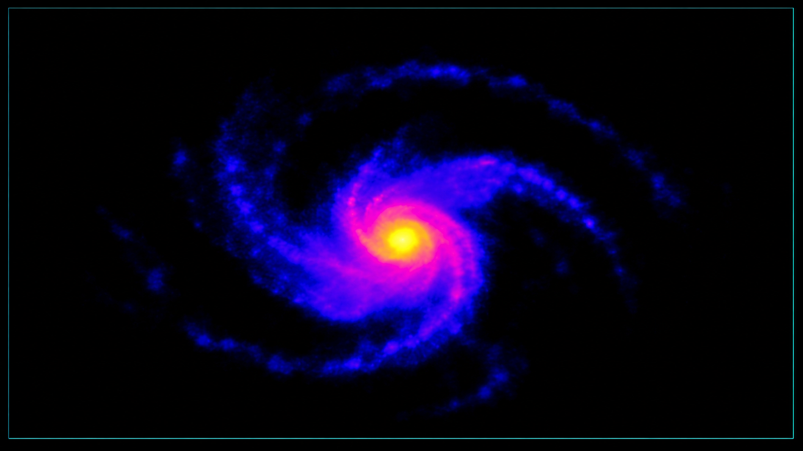

Astronomy · Star Formation
Hi, I'm Qiuyi Luo.
Welcome!
I am currently a visiting researcher at Center for Astrophysics | Harvard & Smithsonian. My work explores how stars form in the cold, dusty regions of molecular clouds in our Milky Way.I love anything that sparks my curiosity and creativity -- the universe comes first. I care deeply about music and art, and I enjoy simple forms of exercise
Visiting researcher
Center for Astrophysics | Harvard & Smithsonian
About
I study how stars are born together.
My research interest is the formation of multiple stellar systems. I study how dense gas fragments during the earliest stage of star formation, and how these fragments grow into binaries, triples and higher order systems. Using radio observations from interferometric such as ALMA, VLA, we look into embedded star-forming regions across the Milky Way, where young stars are still hidden within their natal gas and dust. The formation of multiple systems is a story of growth across space and time.
Research
Things I am curious about


Star-forming environments
Protostellar core
Multiplicity
Core fragmentation
Disk fragmentation
Selected Work
Projects
Now
Current focus
Conducting a statistical survey of multiplicity across diverse galactic environments.
Linking multi-band observations to the formation mechanisms that shape multiplicity across low- and high-mass star-forming environments.
Developing source-matching to connect young stars with their natal cores and assess chance alignment effects in dense environments.
Contact
Let's connect
^_^